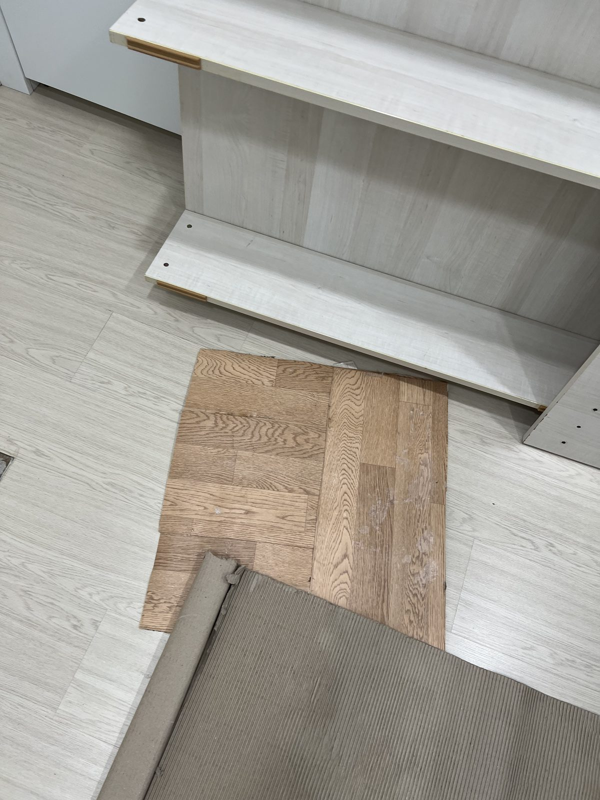
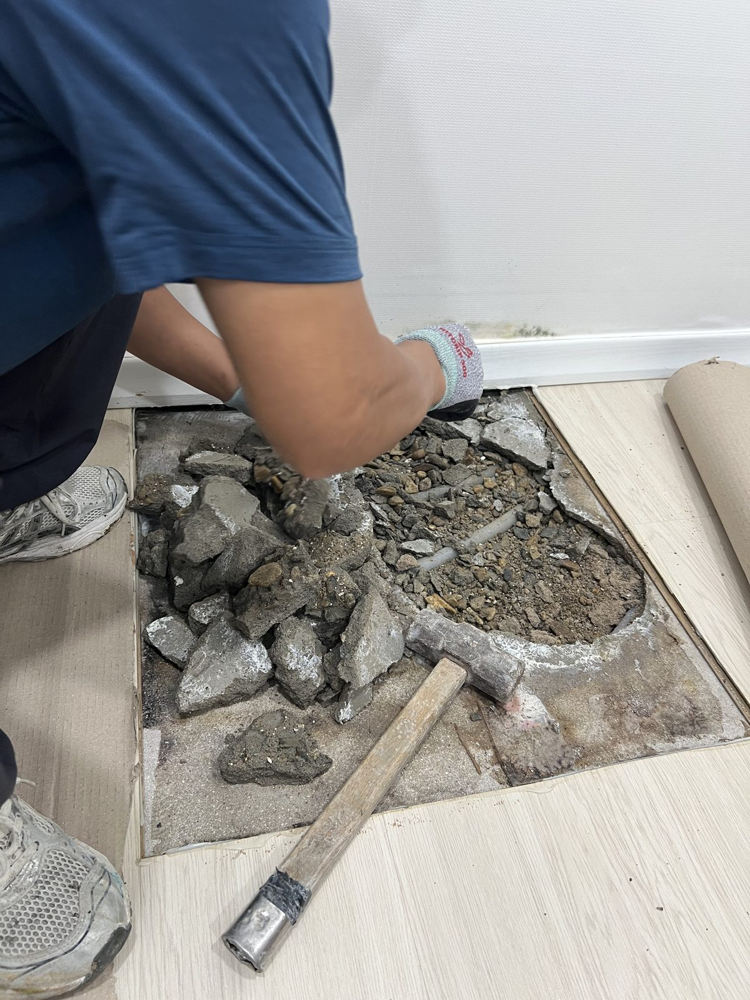
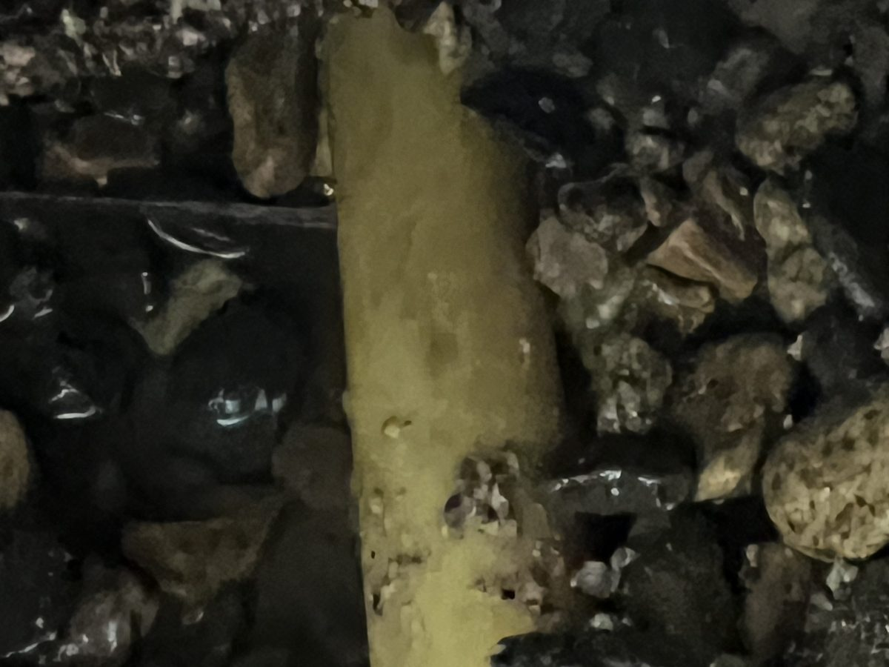
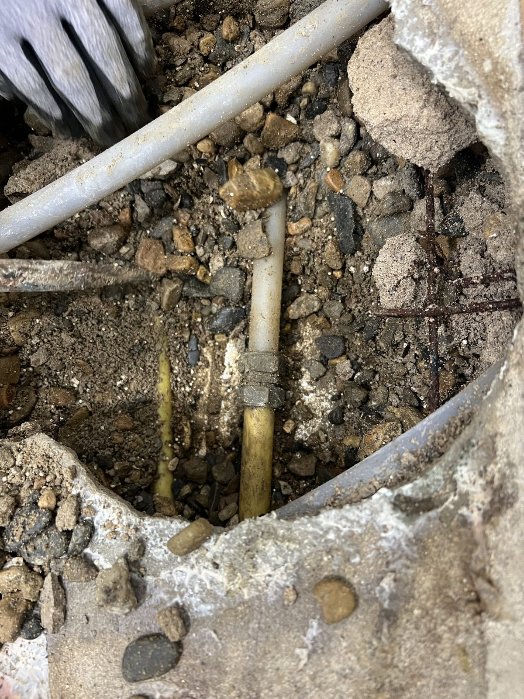
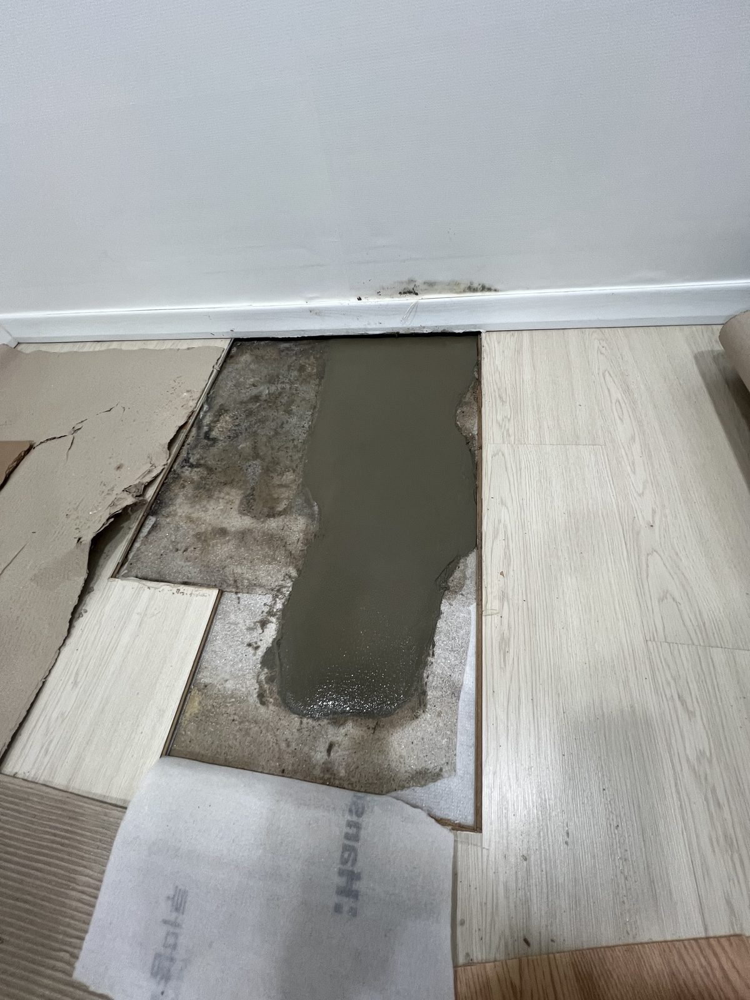

대전 중구 주택 안방 난방관 누수 보수 — 바닥을 열어 손상 구간 교체

현장 작업 한눈에 보기
- 현장
- 대전 중구 문화동 주택 안방
- 문제
- 바닥 아래 난방관에서
국부 누수 흔적 확인 - 작업
- 바닥 일부 개방·손상 지점 확인
문제 구간 절단 후 새 배관 연결 - 결과
- 연결부와 배관 상태 확인
개방한 바닥 미장 복구
대전 중구 문화동 주택의 안방 바닥 아래에서 난방관 누수 구간을 확인했습니다. 필요한 부분만 바닥을 열어 손상 지점을 찾고, 해당 구간을 새 배관으로 연결한 뒤 미장으로 복구한 과정을 사진 순서대로 정리했습니다.
안방 바닥 아래 누수 구간을 찾았습니다
안녕하세요. 대전에서 누수·배관 공사를 하는 만물인테리어입니다. 이번 현장은 안방 바닥 아래 난방관에 문제가 있어, 넓게 철거하지 않고 배관이 지나가는 범위를 따라 필요한 부분부터 확인했습니다.
바닥 마감재를 걷고 작업 범위를 정했습니다
가구와 주변 마감은 그대로 둔 채 점검할 부분의 바닥재를 먼저 걷었습니다. 기존 바닥과 철거 범위가 함께 보이도록 작업 전 상태를 남겼습니다.

필요한 부분만 단계적으로 열었습니다
바닥 아래 배관을 확인할 수 있도록 미장층을 조금씩 걷어 냈습니다. 주변 배관을 건드리지 않도록 작업 공간을 확보하면서 손상 위치에 접근했습니다.

배관 표면의 작은 손상 지점을 확인했습니다
노출한 난방관을 가까이 살펴보니 배관 표면에 작은 손상 지점이 보였습니다. 사진처럼 구멍이 작아도 난방수가 계속 새면 바닥 속 습기와 마감 손상으로 이어질 수 있습니다.

손상 구간을 잘라 새 배관으로 연결했습니다
문제가 확인된 구간을 정리하고 새 배관을 연결해 이어 주었습니다. 연결 부위가 한쪽으로 꺾이거나 눌리지 않았는지 주변 배관과 함께 확인했습니다.

작은 누수일수록 철거 범위를 좁히는 과정이 중요합니다
난방관 누수는 처음부터 바닥 전체를 뜯기보다 배관 방향과 젖은 범위를 따라 문제 지점을 좁혀 가는 것이 중요합니다. 이번 현장도 손상 부위를 직접 확인한 뒤 필요한 구간만 잘라 연결했습니다. 공사 전·중·후 사진을 함께 남겨 마감 안쪽 작업도 나중에 확인할 수 있게 했습니다. 확인 과정을 생략하지 않았습니다.
확인한 자리를 미장으로 복구했습니다
배관 작업을 마친 뒤 열어 둔 부분을 미장으로 채워 바닥 높이를 정리했습니다. 난방관 누수는 물자국만 덮기보다 손상 위치를 확인하고 필요한 구간을 보수한 뒤 바닥을 복구해야 재발 원인을 놓치지 않습니다.
